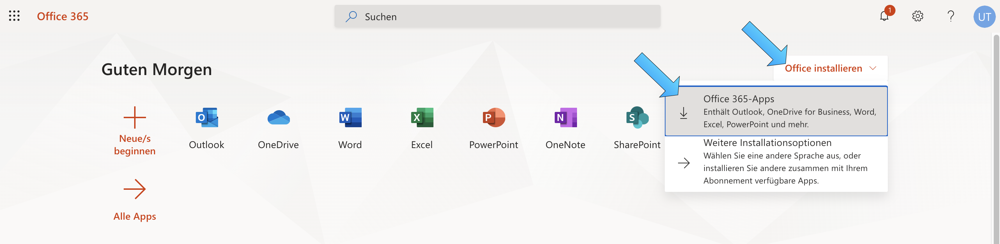
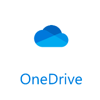
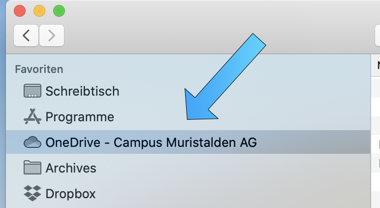
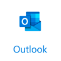
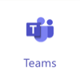
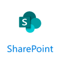

Office 365 Installation
Auf dieser Seite wird beschrieben, wie du dein Microsoft Office 365 erstmalig zum Laufen bringst. Folgende Angaben musst du zwingend von der Schule zur Verfügung bekommen haben, um loslegen zu können:
- Muristalden Email-Adresse, z.B. vorname.name@stud.muristalden.ch
- Initial-Passwort
Es wird empfohlen, die Installation in der folgenden Reihenfolge durchzuführen:
Inhalt
Initial-Installation
Gehe auf https://www.office.com, klicke auf Anmelden. Logge dich dann mit den zur Verfügung gestellten Anmeldedaten in das Microsoft 365-Portal ein.
Beim ersten Einloggen in das Microsoft 365-Portal muss man sich registrieren. Dafür muss man sich mit einer privaten Email-Adresse und einer Handynummer identifizieren. Bitte diese Daten bereithalten und den Instruktionen beim erstmaligen Login von Microsoft folgen.
Wenn du dich erfolgreich ins Portal eingeloggt hast, solltest du als erstes dein Passwort ändern. Wähle ein neues Passwort, dass sicher, aber auch gut merkbar ist. Hinweise dazu, wie man ein sicheres Passwort erstellt, findest du auf der Seite zum Thema Passwortsicherheit.
Nach dem Ändern des Passwortes kannst du via Office installieren und Office 365-Apps das Microsoft 365-Paket herunterladen.

Nach erfolgreichem Download das Paket lokal installieren und den Anweisungen der Installations-Software folgen. Wenn die Installation erfolgt ist, sollten folgende Programme installiert sein:
- Microsoft Teams
- Microsoft OneDrive
- Microsoft OneNote
- Microsoft Word
- Microsoft Excel
- Microsoft Powerpoint
- Microsoft Outlook
Starte eines der Programme. Du wirst nochmal aufgefordert dich mit deinen Login-Daten anzumelden. Danach solltest du alle Office-Programme verwenden können.
Probiere nun auch die anderen Programme aus, ob alles funktioniert.
Microsoft OneDrive

OneDrive ist eine Cloud-basierte Dateiablage. Mit einem Muristalden Microsoft 365 Account bekommst du 1TB in dieser Cloud zur Verfügung gestellt. Cloud heisst, dass du deine Daten sowohl auf deinem Computer, wie auch via Browser im Internet abrufen kannst. Nach der Installation von Microsoft 365 gemäss der Anleitung weiter oben sollte OneDrive bereits auf deinem System installiert sein. Im Explorer (Windows) oder im Finder (Mac) sollte der Ordner OneDrive - Campus Muristalden AG erstellt worden sein. Versuche diesen Ordner zu finden. Normalerweise kann nach der Installation automatisch über die Favoriten im Explorer/Finder darauf zugegriffen werden, siehe dazu den folgenden Screenshot.

Microsoft Outlook

Outlook ist ein Programm zum Verwalten von Emails. Das Einrichten von Outlook für die Schul-Email-Adresse wird sehr empfohlen. Nach der Einrichtung können Emails praktisch gelesen und geschrieben werden, ohne dass man sich immer mit dem Browser neu anmelden muss. Mit folgenden Schritten kann Outlook eingerichtet werden:
xxx
xxx
xxx
Microsoft Teams

xxx
Microsoft Sharepoint

xxx
Optional: Microsoft Office 365 im Browser
xxx